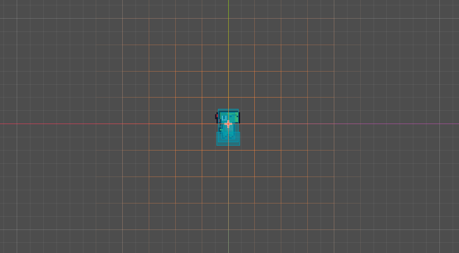
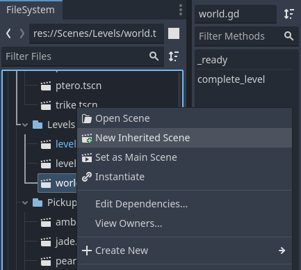
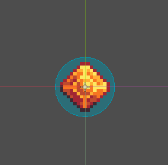
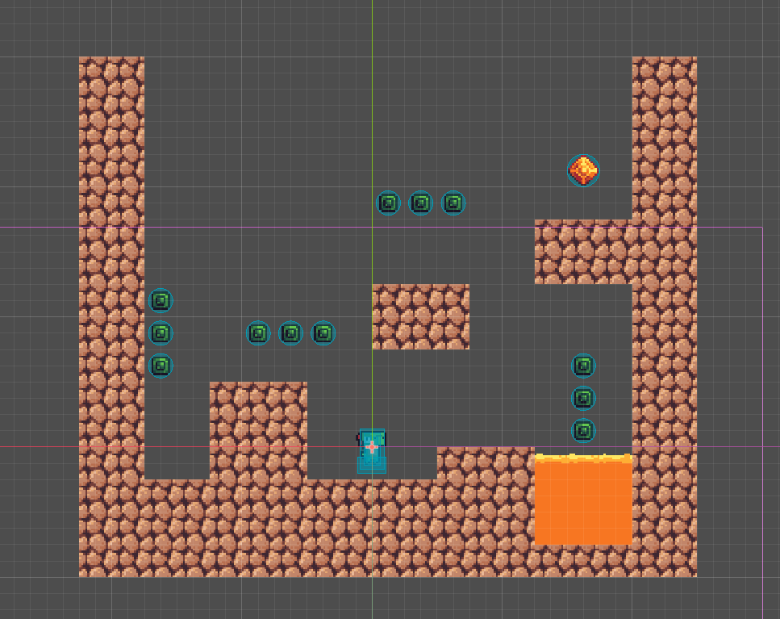

Multiple Levels
IMPORTANT! This module requires the Collectables and Global Script modules to be completed first!
Right now we have a problem: one level does not make much of a game. On this page we will add the ability for you to create multiple levels and for the player to be able to move between them.
Preparing the World Scene
In order to create new levels, we first need to destroy. Create a copy of your world scene, then remove all enemies, pickups, objects and tiles from the viewport (you will want to keep tilemaps, canvas layers and the player in the scene tree.) Once you are done with it you should have a clear viewport like so:
Note that if you have added UI elements from another module they will also be visible. We want anything that isn't shared amongst every level to be removed.
Go ahead and save the empty world scene. You can also rename your original level scene Level0 or other name that makes sense to you. You can now create new levels by right clicking the world scene in the file system and selecting new inherited scene.
Go ahead and make two levels this way called Level1 and Level2. Use the tilemap and scenes you've saved just like when you made your test level!
Creating the End Level Signal
Next, navigate to the global script. In it we will be creating our own signal. Similar to how nodes can connect using signal like area_entered, we can create our own signals to communicate across nodes. To create one is pretty simple: in the top to the global script add signal level_complete.
signal level_completeOf course a signal on it's own doesn't accomplish much. To get it to do something we need to connect it to a function via our script, and set up a variable to store what level comes after the current one. Open your world script (or attach one to your world node if you do not have one) and create an export variable called next_level that requires a PackedScene. Then in the _ready function add the following snippet of code:
@export var next_level : PackedScene
func _ready():
Global.level_complete.connect(complete_level)This will immediately throw an error. this is because we are trying to call a function we haven't created yet! Under the _ready function create a new function called complete_level. In the function body we will check if the next_level variable is set (skipping the function if not), then we will let godot know to load the next level by calling the tree's change_scene_to_packed method like so:
func complete_level():
if not next_level is PackedScene: return
get_tree().change_scene_to_packed(next_level)We still have a problem though: we haven't set what level should come after the first one! Go to your first level and select the World node. In the inspector you should see the next_level section. Drag whatever level you want to happen next from your file system into that section. You will need to do this for each level that has a following level.

Note that if you want to change your starting level (called the main scene) you can by going to your project settings under run. Just locate the scene you want to use in your file system!
Creating the Win Condition
Of course, in this current state there is nothing actually emitting the level_complete signal, meaning the level will never change! To fix this we will add a simple pickup that completes the level. Let's repeat the steps we took to make the jade pickup by creating a new inherited scene from the Pickup scene. Name the root node Amber, then follow the steps to create a new sprite frames. You can find the amber sprite in the multiple levels folder of your VGDC-2024 Assets folder.
If you are not taking this course in person, you can download the assets Here
The Amber's sprite sheet should look like this:

Continue with the pickup creation, adding the collision shape. The Amber's viewport should look like this:
Next, we will need to add additional functionality to the amber beyond the regular pickup script. Go ahead and disconnect the Amber node's script (it is the same button used to add one) then attach a new script to it. In the window that pops up, we need to change what node the script inherits from. In this case we want to set it to Pickup.

By inheriting from the Pickup script, we gain all of its functionality, but we gain the ability to overwrite and add our own functionality. In this case we want to overwrite the onPickup function by first emitting the level_complete signal then running the default Pickup script's onPickup function. We can do that like so:
func onPickup(_body):
Global.level_complete.emit()
super.onPickup(_body)Note that we still need to have the same arguments as the base function, and that we need to pass the same arguments to the base function when we call it.
By using the super keyword, we can call the original version of a function that a script has inherited, allowing us to add to a function instead of simply replacing it. And that is the amber pickup done! Go ahead and save it as a new scene and add it to your world scene. You can then move it wherever you want in your levels. Here is my test level:
And that is the module complete! Go ahead and make sure everything is working, make some levels and then move on to another module!